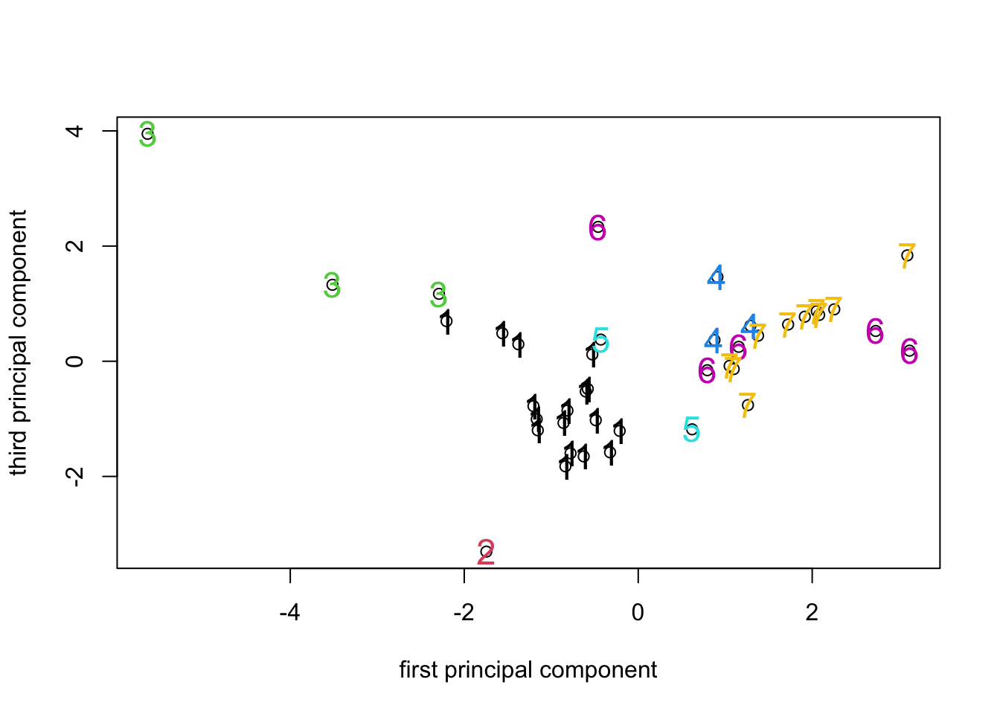

Linking ordination and clustering
We have already seen that we can apply both ordination analyses (such as PCA and PCO) and cluster analyses to the same data sets on objects of interest. We also had some hints that there are connections between certain types of ordination and cluster analysis. In this section of the workshop we will explore those connections more fully and look at how to combine the two sets of techniques. To do this we will look at two natural pairings of approaches, PCA with K-means NHCA, and PCO with HCA of a common distance matrix.
PCA and K-means NHCA
In the section on PCA we noted that the PCA algorithm derives a set of new variables (the principal components) from a set of data such that the maximum variance possible among the data objects with respect to the original variables is captured in as small a set as possible of the new principal components. We also saw that in K-means NHCA the clusters are formed in such a way that the within-cluster variance (the sums of squares) over the data variables is minimized given the number of clusters we impose on the objects. Given this shared goal of minimizing variance, we might expect that a successful NHCA will result in groups of objects that occupy compact regions of the principal component space and which can be clearly differentiated from other clusters in that space. Another way of saying this is that PCA gives us a geometric interpretation of NHCA, in which the distances between points in the PCA solution is an indication of their tendency to cluster together in K-means NHCA.
With the background concepts spelled out, let’s take a look at the disease survey data again and bring the PCA and NHCA together. We’ll need the PCA solution from the disease survey analysis. If you still have the PCA object from the analysis on the correlation matrix in your environment you will be able to use it directly. If you have removed it, or restarted your R session since we ran the PCA, you will need to recreate it. The following chunk of code will let you load the data file and run the PCA. Note we don’t need to see the results at this stage so we don’t ask R to display anything.
PCA1_data <- read.csv("data/PCA1_Survey.csv", head = TRUE)
PCA1_cordata <- PCA1_data[c(-7, -8, -9)]
head(PCA1_cordata)survey_corpca1 <- princomp(PCA1_cordata[3:14], cor = TRUE)
NHCA_data1 <- data.frame(PCA1_cordata[, 1:2], scale(PCA1_cordata[, 3:14]))
NHCA_fields2 <- kmeans(NHCA_data1[, 3:14], 7)If the NHCA object is not in your environment you will need to create
one from the survey data using hclust(). If you need a
reminder on how to do that, open the file APS2015_nhca.R.
To bring the ordination and cluster analysis together we plot the
fields in the the principal component space of the PCA solution and use
the cluster membership vector from the NHCA solution to identify the
points. In the examples we use a simple call to the “text” command to
achieve the colors and cluster identifiers, but we could use the same
trick with the ‘col’ option of the plot() command itself to
color the points on the plot and also use it to allocate symbol types to
the clusters. We leave you to explore those (and other)
possibilities.
PCA_7clusplot <- plot(survey_corpca1$score[, 1], survey_corpca1$score[, 2],
xlab = "first principal component", ylab = "second principal component"
)
text(survey_corpca1$score[, 1], survey_corpca1$score[, 2],
cex = 1.5, NHCA_fields2$cluster,
col = NHCA_fields2$cluster
)
PCA_7clusplot <- plot(survey_corpca1$score[, 1], survey_corpca1$score[, 2],
xlab = "first principal component", ylab = "second principal component"
)
text(survey_corpca1$score[, 1], survey_corpca1$score[, 2],
cex = 1.5, NHCA_fields2$cluster,
col = NHCA_fields2$cluster
)PCA_7clusplot2 <- plot(survey_corpca1$score[, 1], survey_corpca1$score[, 3],
xlab = "first principal component", ylab = "third principal component"
)
text(survey_corpca1$score[, 1], survey_corpca1$score[, 3],
cex = 1.5, NHCA_fields2$cluster,
col = NHCA_fields2$cluster
)
Looking at the ordination labelled with the 7 cluster identifiers, we
can see that the clusters formed by hclust() using K-means
has resulted in clusters that are (for the most part) fairly compact in
PCA space. Given that the PCA is a representation of the variance in the
data and the K-means attempts to identify clusters that minimize the
overall within-group variance, it’s no surprise that that the PCA turns
out to be a good way to visualize the results of K-means clustering (or
looking at things the other way round, that K-means is a way to identify
compact clusters of objects in a PCA space.).
It won’t come of much of a surprise that a similar relationship exists in the case of PCO and HCA. The space constructed by the PCO analysis of a distance matrix generates a low dimensional representation of the true distances between objects. HCA represents the same set of distances as branch lengths on a tree. We would expect that there will be an approximate relationship between the branch structure of the tree and the clustering of objects in the PCO space.
PCO and HCA
We have seen that both PCO and HCA operate on a distance (or similarity) matrix. The PCO attempts to represent the distances in the matrix as a set of points in Euclidean space, the HCA represents the distances as branch lengths on a tree. As with the PCA/NHCA combination, what we might expect is that objects that form compact branches on a dendrogram formed from a similarity matrix, will occupy a compact region of the PCO space formed from the same similarity matrix. It is worth remembering however that because the PCO solution is only an approximation of the true distances among the objects and because (as we have seen) different tree-forming algorithms produce rather different results when applied to the same distance matrix, we should be ready for the PCO and HCA results to show some differences.
For this example we’ll work with the presence/absence version of the disease survey data. In case you don’t still have the binary distance matrix for that analysis in your R environment, here is the code that creates it from the data vectors used for the PCA analysis.
HCA_data2 <- data.frame(PCA1_cordata[, 1:2], (PCA1_cordata[, 3:14] > 0) * 1)
field_bindis <- dist(HCA_data2[, 3:14], method = "binary")
PCO1_fields <- cmdscale(field_bindis, k = 10, eig = TRUE)
HCA_field3 <- hclust(field_bindis, method = "complete")
plot(HCA_field3)
field_hgroups3 <- cutree(HCA_field3, k = 7)
rect.hclust(HCA_field3, k = 7, border = "blue")PCO_7clusplot <- plot(PCO1_fields$points[, 1], PCO1_fields$points[, 2],
xlab = "first principal coordinate", ylab = "second principal cordinate"
)
text(PCO1_fields$points[, 1], PCO1_fields$points[, 2],
cex = 1.5, field_hgroups3,
col = field_hgroups3
)The result is pretty much what we’d expect - the tree branches
identified by cutree() do seem to form compact clusters in
the PCO space, but the plot clearly has some points that lie directly on
top of one another because there are far fewer than 41 visible.
The analyses suggest that there are clusters of fields in the data and we saw earlier when we looked at PCA biplots that there are diagnostic tools available to relate the clusters to the original data variables. At the start of an experimental program these sorts of analyses can be used to generate hypotheses for further testing, or important structure that needs to be considered in model-building. Of course, a logical question to ask is whether the apparent differences among the clusters are “real” or simply an artifact of the sampling procedures used to collect the data (which fields, which locations within fields for assessing the diseases etc). Sometimes we have no particular information about structure in the data before running analyses and the techniques we have looked at so far can be used to find out if there is obvious structure (i.e. clustering) and which variables are associated with it. On the other hand, sometimes we know a priori that there are groups in our dataset and the question we want to answer is whether they are different from one another, and if they are, in what respects they differ. In this situation we move from exploratory data analysis to multivariate hypothesis testing and that will be the subject of the final section of the workshop.